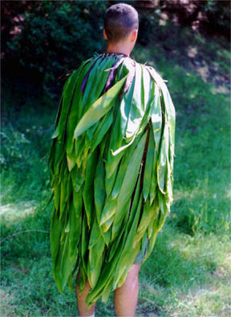
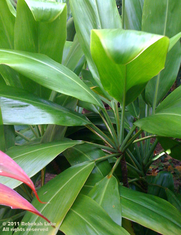
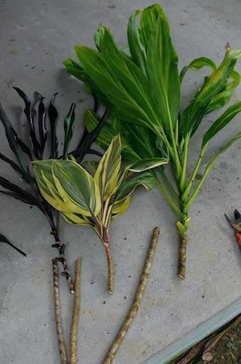

The Kī Plant

Scientific Name:
Cordyline fruticosa
Common Name:
Ti Plant

Cultural Uses
Leaves are used for the following uses below:
- Thatching for traditional hale
- Food wrappers
- Hula skirts
- Sandals
The sweet roots were baked and eaten or used to make an alcoholic beverage called ‘okolehao.

Medicinal Uses
Insert what you found here...
Traditional Hale Building Uses
Insert what you found here...

How to Care for the Ki
Below are tips to mālama your ki plant
- Do not place plant in direct sunlight
- Do not water your ki plant everyday. Allow soil to dry during waterings
- Feed your ki plant food that does not contain fluoride
Interesting Facts
Insert what you found here...